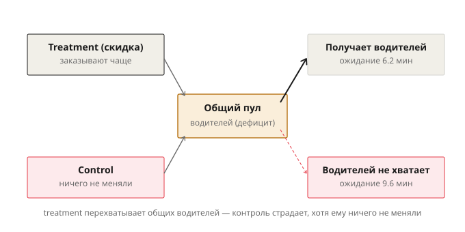
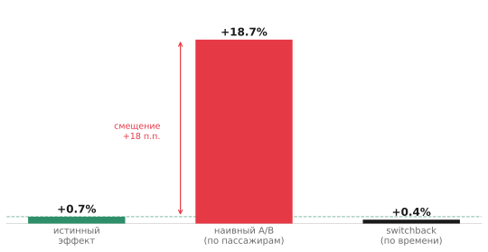
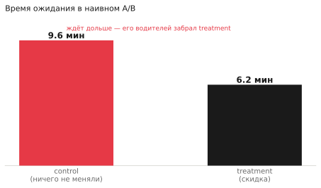

Почему A/B на двустороннем рынке врёт сильнее всего: interference в райдхейлинге
Вы тестируете скидку для пассажиров в райдхейлинге. Половине показываете промокод, половине нет, рандомизация на уровне пользователя, всё по учебнику. Через две недели — у группы со скидкой заказы и завершённые поездки заметно выше контроля, разница огромная и значимая. Выкатываете на всех. И эффект не просто проседает — его почти нет. Не потому что вы плохо посчитали, а потому что в двустороннем рынке обычный A/B измеряет не то, что вы думаете. И врёт он здесь сильнее, чем почти где-либо ещё.
Причина в том, что райдхейлинг — это рынок, где две стороны делят общий ограниченный ресурс, и группы эксперимента физически не могут быть изолированы друг от друга. Разберём, почему так, и как это лечится.
Чем двусторонний рынок отличается
В большинстве продуктовых A/B-тестов группы живут в параллельных вселенных: моя синяя кнопка не влияет на ваш опыт с зелёной. Это и есть условие, на котором стоит весь A/B — SUTVA, предположение о том, что исход одного пользователя зависит только от его собственной группы, а не от того, в какие группы попали остальные.
В райдхейлинге это предположение нарушено по самой природе рынка. Пассажиры и водители делят общий пул: все пассажиры в городе вызывают машины из одного набора водителей. Отдельных водителей для контрольной группы не существует. И если вы дали половине пассажиров скидку, они начинают заказывать чаще — и расхватывают водителей из того же пула, из которого заказывает контроль. Машин на всех не хватает, и у контрольной группы растёт время ожидания, падает доля завершённых поездок. Контроль, которому вы ничего не меняли, стал хуже — не сам по себе, а потому что treatment забрал его водителей.
Группы оказались связаны через общий ресурс. SUTVA нарушена не изредка и не в краевом случае, а встроенно — это нормальное состояние любого двустороннего рынка с ограниченным предложением.

Почему эффект именно завышается
У interference в райдхейлинге есть конкретное направление, и это делает её особенно коварной. Прирост в treatment получается не потому, что скидка создала новую ценность на рынке, а потому что treatment отнял ресурс у контроля. В маркетинге это называют cannibalization bias: продажи (или поездки) treatment выше не оттого, что вырос общий пирог, а оттого, что treatment откусил от куска контроля.
Простая разница средних между группами систематически переоценивает эффект. Покажу на симуляции рынка с дефицитом водителей. Истинный глобальный эффект скидки на завершённость поездок — то, что произошло бы, если включить скидку для всего рынка сразу, — составляет меньше процента: когда машин и так не хватает, скидка не создаёт новых поездок, она лишь перетасовывает, кому достанется водитель. А наивный A/B на тех же данных показывает +18.7%.

Разница почти в двадцать процентных пунктов — это не шум, который усреднится, а систематическое смещение в одну сторону: в сторону «выкатываем». Аналитик видит +18.7%, раскатывает скидку на всех и ждёт роста завершённости — а на полном рынке роста нет, потому что в тесте никакой новой ценности и не создавалось.
Механизм виден прямо в метриках самого теста. В наивном A/B контрольная группа ждёт машину дольше, чем treatment, — хотя контролю ничего не меняли.

Если вы видите, что контрольная группа в A/B повела себя иначе, чем должна была без всякого воздействия, — это сигнал, что группы не изолированы.
Решение: switchback
Если проблема в том, что две группы делят рынок одновременно, уберём «одновременно». Switchback рандомизирует не пользователей, а время: весь рынок целиком работает то со скидкой, то без, чередуя режимы по интервалам. В каждый момент времени включён ровно один режим на всём городе — двух конкурирующих за водителей групп просто нет.
На той же симуляции switchback даёт +0.4% — близко к истинному эффекту, в отличие от наивных +18.7%. Это давно стандарт для двусторонних платформ: Lyft, Uber, DoorDash тестируют ценообразование и алгоритмы диспетчеризации именно так, потому что под сетевыми эффектами это даёт результат, которому можно верить.
Платой становится усложнённый анализ. Интервалов времени немного, и они не независимы — вечер не похож на утро, выходные на будни, — поэтому к ним нельзя относиться как к обычным независимым наблюдениям.
Carryover: ловушка, которой нет в обычном A/B
У switchback есть специфическая боль, отсутствующая в пользовательском A/B, — carryover effect. Рынок не сбрасывается мгновенно при переключении режима. Если в «час со скидкой» вы привлекли больше водителей в город или, наоборот, исчерпали их, это состояние перетекает в следующий интервал, уже без скидки, и заражает его. Водители не телепортируются, спрос не обнуляется на границе интервала — у рынка есть инерция.
Отсюда главный параметр дизайна switchback — длина интервала. Слишком короткий — соседние интервалы сильно загрязняют друг друга через carryover. Слишком длинный — интервалов мало, оценка теряет точность. Выбор длины обычно привязывают к тому, за какое время рынок возвращается в равновесие после переключения.
Гео и почему оно тоже течёт
Второй подход — рандомизировать не время, а пространство: одни города или районы со скидкой, другие без. Но и гео-границы в райдхейлинге не герметичны. Водитель из пригорода поедет туда, где выше спрос или цена, — то есть в соседний «город-контроль» или «город-treatment». Ресурс перетекает через географию ровно так же, как через время.
За этим стоит общий компромисс выбора единицы рандомизации: чем крупнее единица (район, город, длинный интервал), тем меньше interference и смещения — но тем меньше самих единиц, и тем выше дисперсия оценки. Чем мельче — тем больше точек и точность, но тем сильнее группы протекают друг в друга. Дизайн эксперимента на двустороннем рынке — это всегда поиск точки на этой шкале между смещением и дисперсией.
Что забрать с собой
В двустороннем рынке interference — не редкая патология, а свойство по умолчанию. Пассажиры и водители делят общий пул, поэтому изменение для одной стороны почти всегда меняет условия для другой, и обычный A/B возвращает смещённую — как правило, завышенную — оценку.
Перед запуском A/B на рынке с ограниченным общим ресурсом стоит задать один вопрос: делят ли мои группы что-то общее — водителей, инвентарь, бюджет, внимание? Если да, простая разница средних соврёт, и чинить это нужно дизайном эксперимента — switchback или гео, — а не поправкой постфактум. Сильный аналитик на двустороннем рынке узнаёт interference до запуска, а не объясняет ею провал выкатки после.
Тот же слом SUTVA, но через общий бюджет рекламодателей, а не пул водителей — в статье «Почему A/B-тест ломается в рекламном аукционе». Switchback, гео и synthetic control подробнее — в курсе квазиэкспериментов.